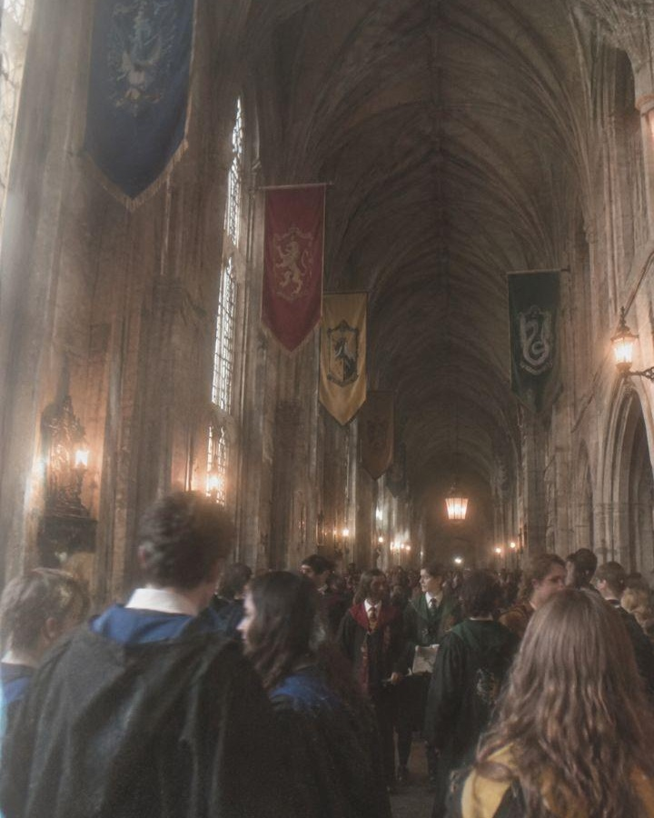
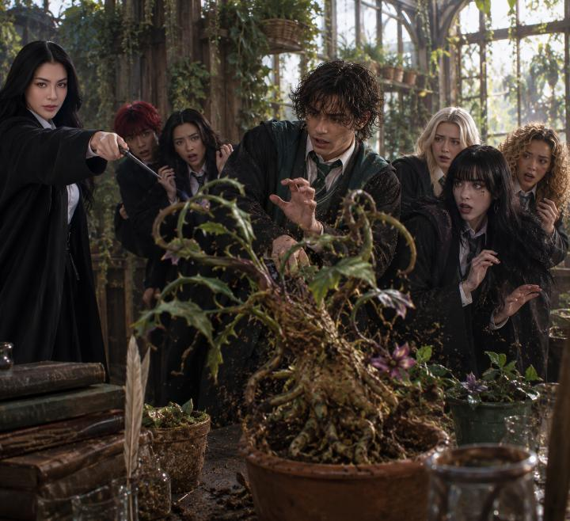
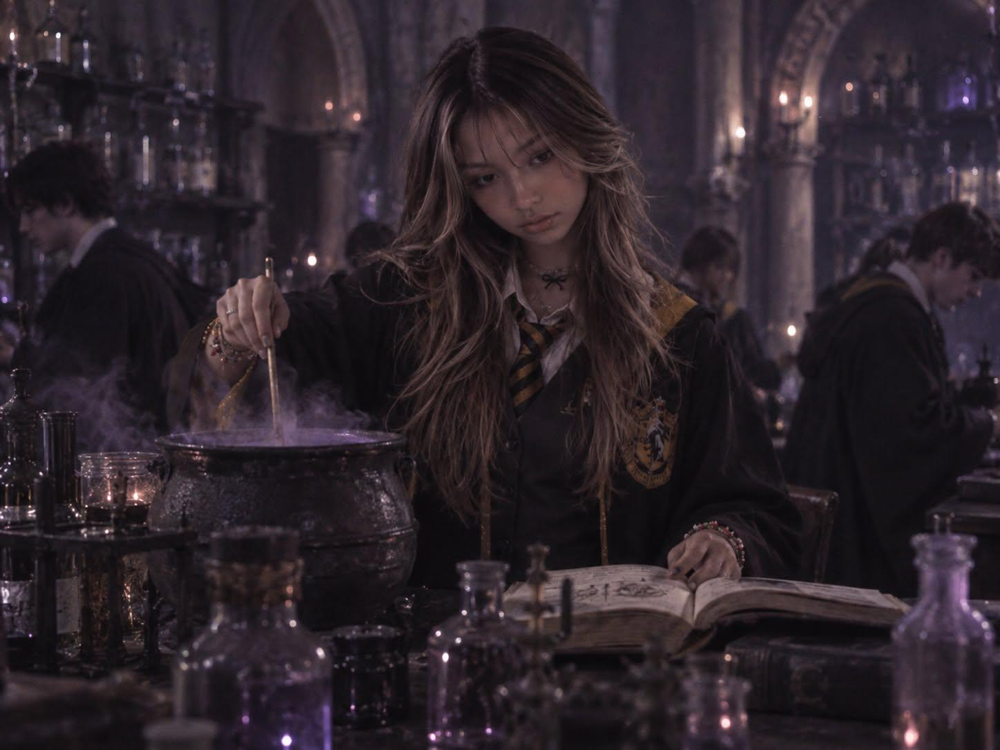
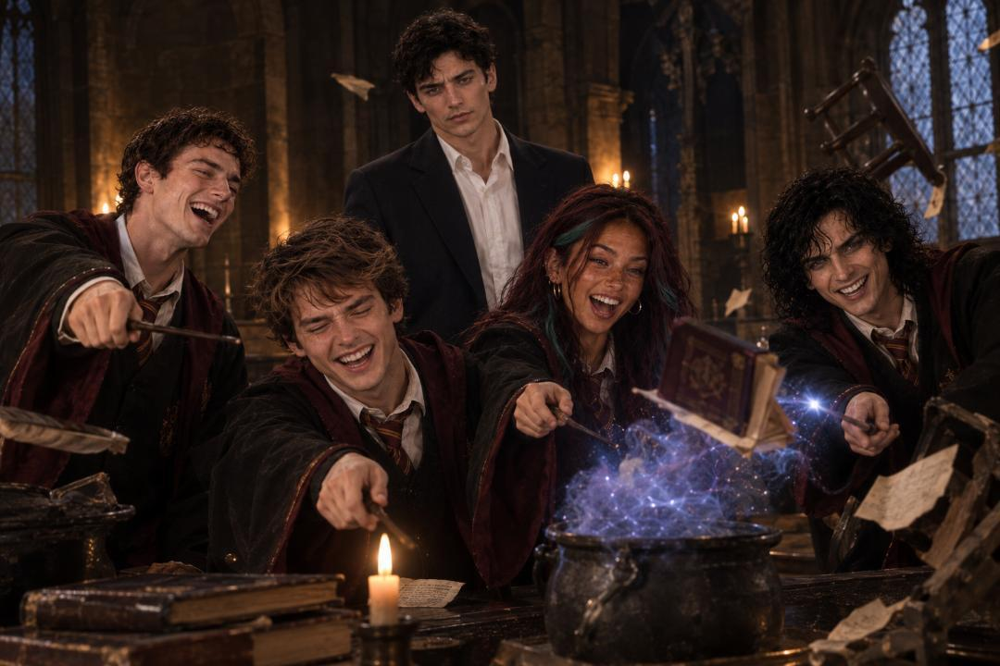
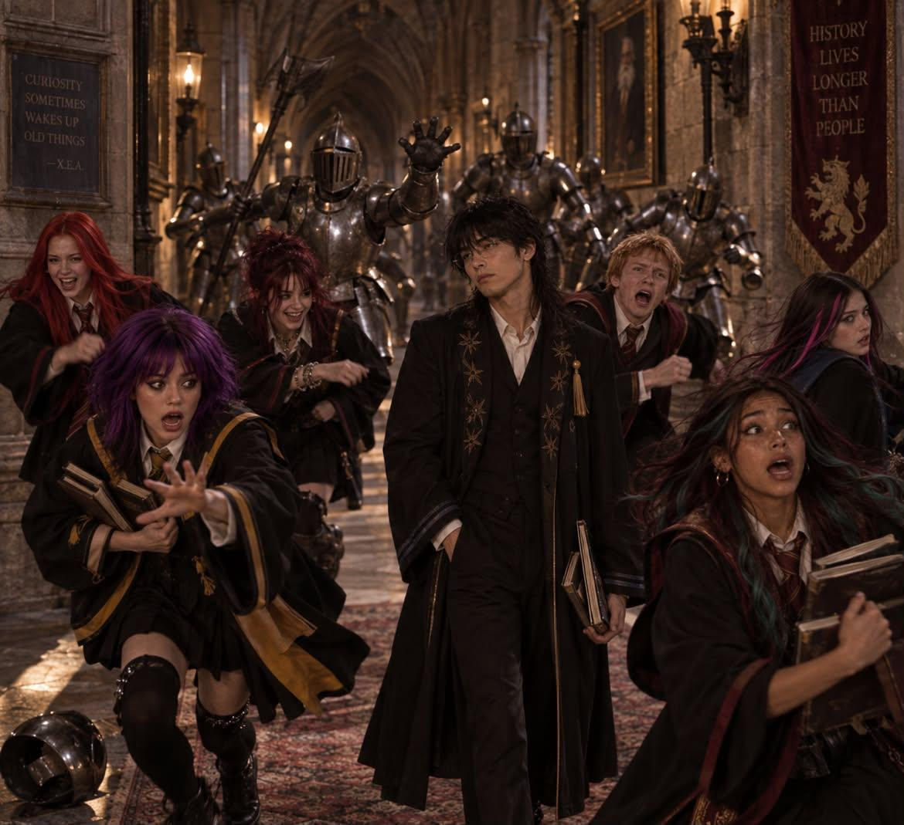
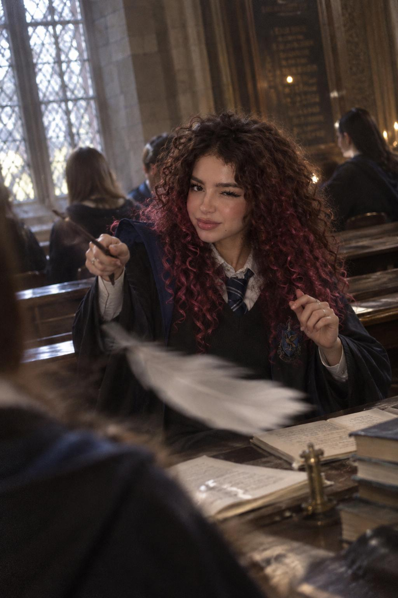
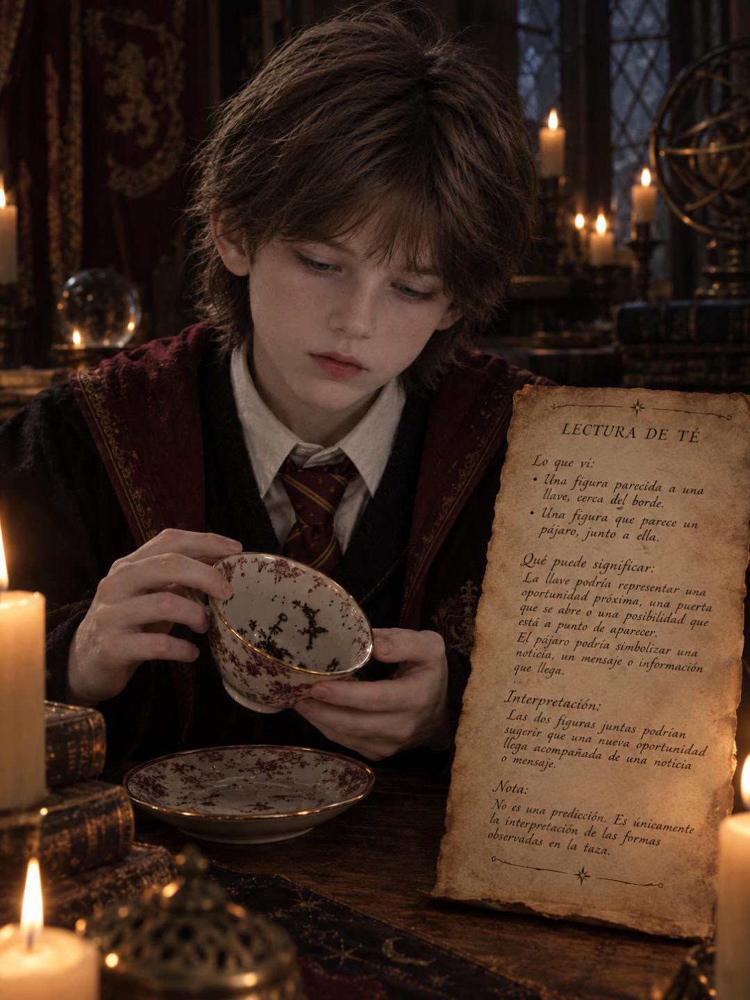
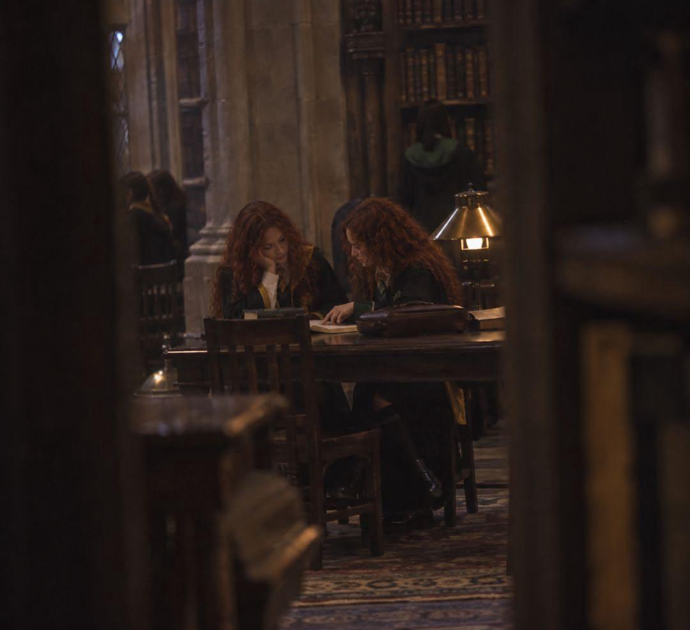
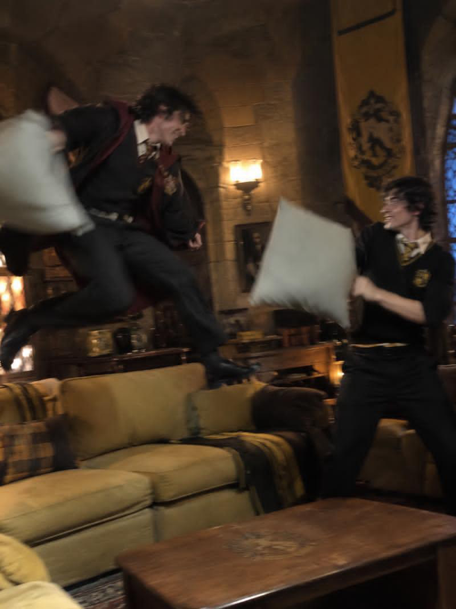

Vida en Hogwarts
Porque no todo ocurrió durante los grandes eventos. También estuvieron las conversaciones entre clases, los desayunos demasiado largos, las prácticas, los accidentes, las bromas y todos esos momentos que nadie planeó fotografiar.


Entre clases
Cinco minutos para llegar a la siguiente clase parecían suficientes hasta que una escalera decidía cambiar de dirección, alguien encontraba a sus amigos en el pasillo o surgía una conversación que, evidentemente, no podía esperar.

Entre una clase y otra. Algunos llegaron temprano. Otros hicieron el intento.

Una conversación que definitivamente iba a durar “solo un minuto”.

El tráfico de Hogwarts. Estudiantes cruzando el castillo antes de la siguiente clase.

Nadie recuerda qué estaba pasando aquí, pero claramente era importante.

Llegando tarde. Una tradición académica.
The Great Hall
Técnicamente era el lugar para desayunar, almorzar y cenar. En la práctica también fue centro de reuniones, discusiones, cartas, anuncios, celebraciones y una cantidad cuestionable de chismes.

Una cena completamente normal en Hogwarts. Más o menos.


Class in session
Pociones que salieron perfectamente, Pociones que definitivamente no, plantas poco cooperativas, hechizos nuevos y profesores preguntándose por qué habían elegido esta profesión.

Herbología
Pociones
D.C.A.O.
Runas
Encantamientos
Adivinación Estudios Muggles
Estudios Muggles
“La mayoría de los mejores recuerdos comenzaron cuando se suponía que estábamos haciendo otra cosa.”
Off the clock
Cuando terminaban las clases, Hogwarts seguía despierto: biblioteca, salas comunes, terrenos, deberes de último minuto y estudiantes asegurando que “sí habían estudiado”.




Practice makes perfect
Antes de cada partido estuvieron los entrenamientos, estrategias, caídas, descansos y suficientes horas sobre una escoba como para cuestionar todas las decisiones que llevaron hasta allí.


Just Hogwarts things
Algunas fotografías necesitaban una explicación. Estas probablemente también, pero nadie recuerda cuál era.


No todos los recuerdos necesitaban ser importantes para merecer quedarse.
Entre clases, comidas, entrenamientos, deberes, conversaciones y momentos completamente inesperados también ocurrió una parte de nuestra historia.
Volver al Anuario